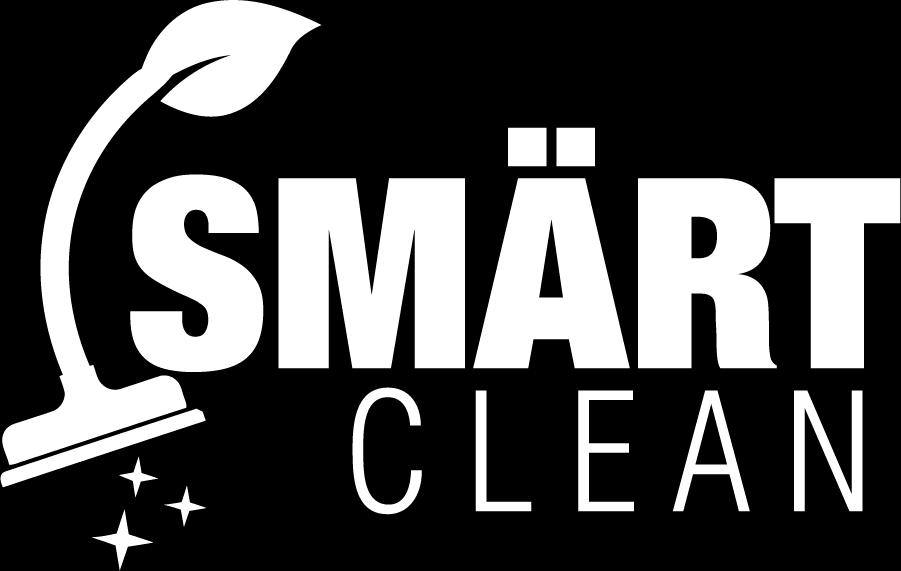

Saltar al contenido principal
Still Louder - Al Vacío
Tu navegador no soporta el elemento de audio. Por favor, actualiza tu navegador para escuchar la canción.
Escúchalo en todas las plataformas digitales
Síguenos en redes sociales
Instagram
Facebook
YouTube
Déjanos tu comentario
Tu nombre
Ingresa tu nombre (máximo 50 caracteres)
Tu comentario
Escribe tu comentario sobre la canción (máximo 500 caracteres)
Enviar comentario
Patrocinadores


Déjanos tu comentario